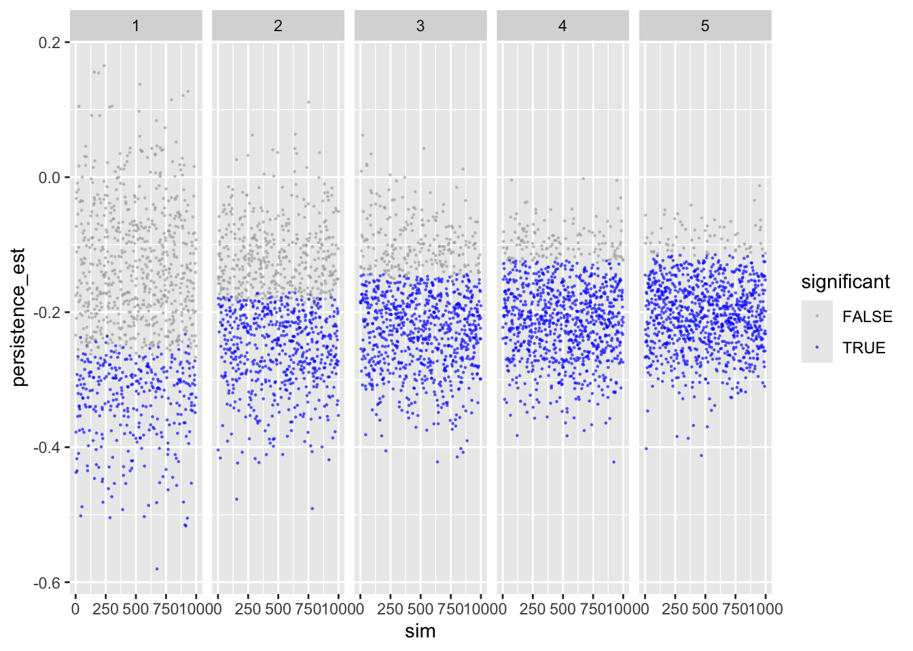
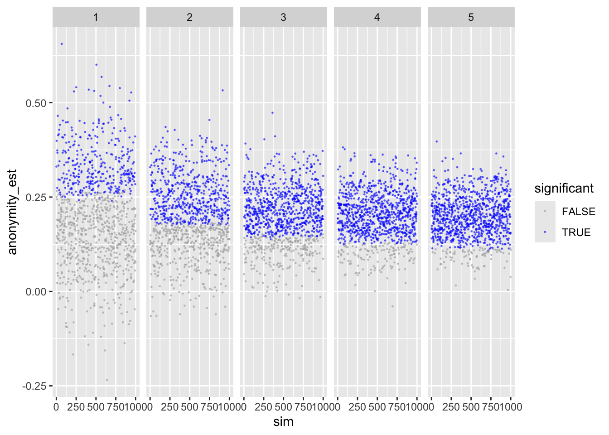
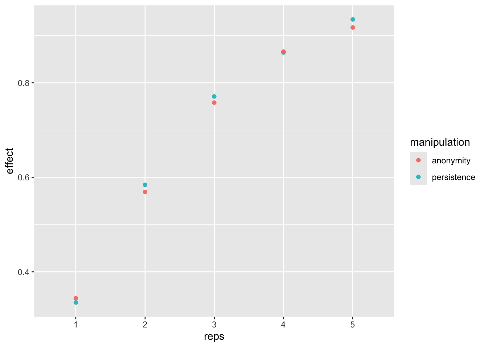
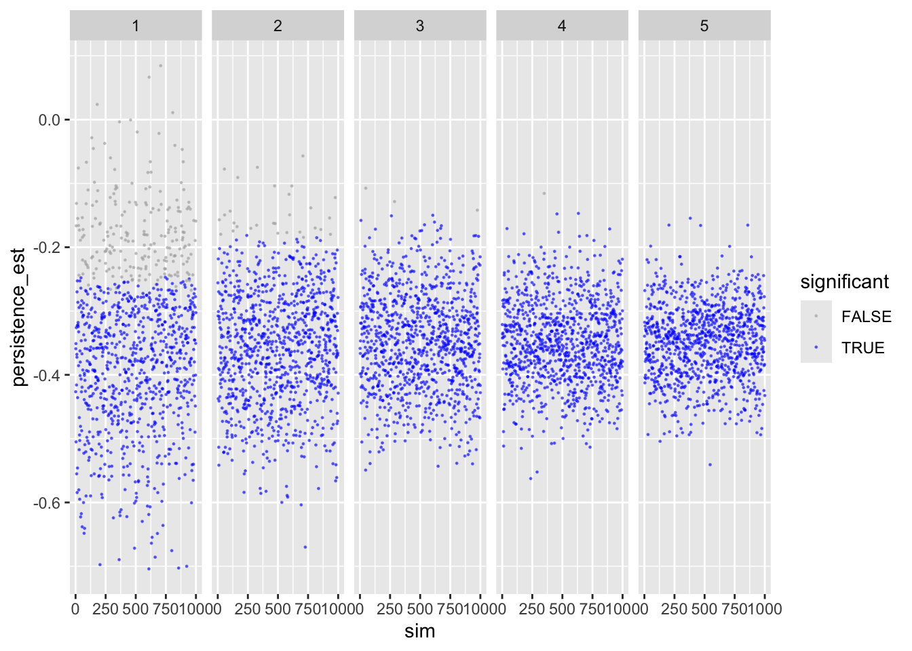
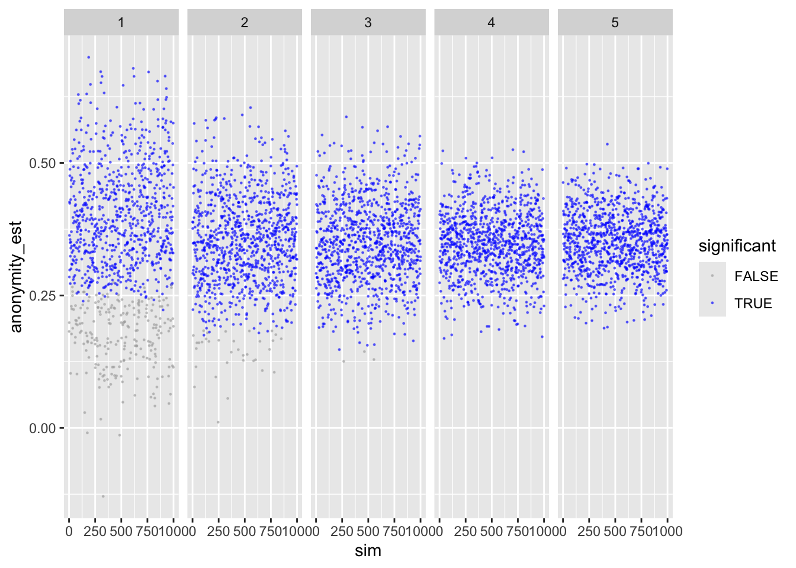
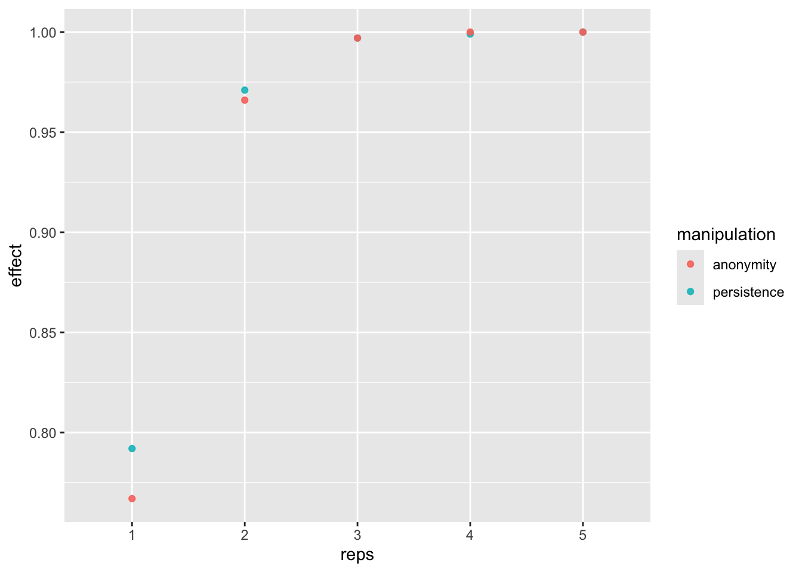
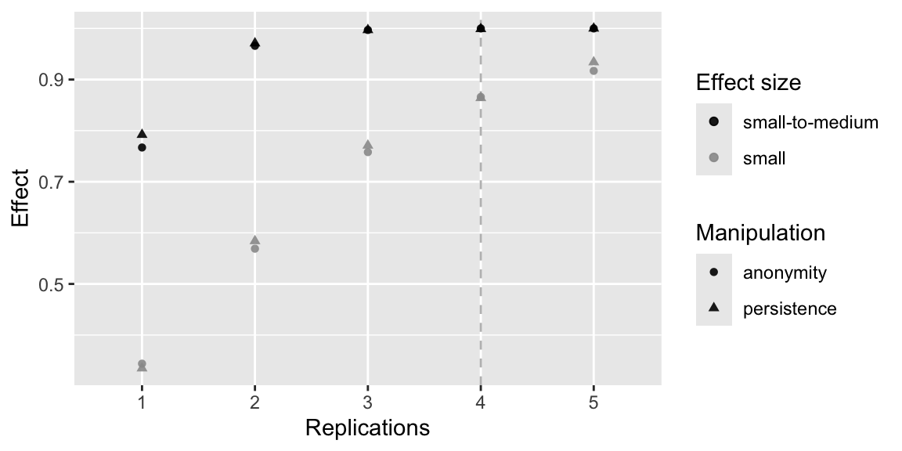

library(BayesFactor)
library(brms)
library(broom)
library(ggplot2)
library(knitr)
library(magrittr)
library(tidyverse)Power Analyses
Background
Using data simulation, we run a power analysis for a study on how design characteristics of online platforms affect online political participation. In the study, people use a social networking site (discord) on which they discuss political matters. Participants will communicate in groups of 20 people each. This number is fixed for theory-related reasons, as we are interested in medium scale group communication. The dependent variable is how much people discuss (measured via number of opinion expressions). We’re interested how different SNS designs affect communication.
The study design is as follows:
- The website is experimentally manipulated (2 x 2 design).
- First, the persistence of the comments is manipulated (permanent vs. ephemeral);
- Second, the anonymity of the users is manipulated (identifiable vs. anonymous);
- To increase generalizability, the groups will discuss one of three topics: corona politics, environment, gender.
- All is between-person
So these are 2 (anonymity) x 2 (persistence) experimental factors and a 3-way generalization factor (topic), resulting in a minimum of 12 groups. Hence, the minimum sample size 12 x 20 = 240 participants.
To calculate power, the question now is how often do we need to repeat this design to achieve sufficient power? Once, twice, thrice, etc? Hence, the factor to change/affect power is repetition, ranging from 1 to 5. Note that financing would only allow 4 repetitions, so the fifth is out of curiosity.
We are simulating data which we then analyze. The data simulation is somewhat rudimentary.
- In reality, the data are nested: in groups (some groups are more active than others) and topics (some topics elicit more comments than others). Because we are lacking information on the covariance structure, we did not implement the data’s nested structure into our power analyses. We also did not analyze the data using mixed effects models, which account for nested/hierarchical structure.
- We build our simulation on standardized data. We do so, as we’re lacking the necessary information on effects sizes and variances in absolute terms.
- Opposed to what we model here, our outcome variable will not be normally distributed. Several participants will likely not express their opinions, whereas some might do so quite actively. As a result, we will analyze the data using Bayesian models modeling the outcome variable with a zero-inflated poisson distribution.
In conclusion, in our paper we will analyze the data using (Bayesian) mixed effects modeling using lme4 and/or brms.
Custom functions
Generate design
generate_design <- function(groupsize,
persis,
anon,
topics,
repetition,
...){
# function generates underlying (empty) datastructure
# count number of groups
groups <- persis * anon * topics * repetition
# make datastructure
expand.grid(
participant = 1:groupsize,
persistence = 1:persis - 1, # -1 to make binary
anonymity = 1:anon - 1,
topic = 1:topics,
repetition = 1:repetition) %>%
as.data.frame() %>%
rownames_to_column("id") %>%
mutate(
group = rep(c(1:groups), each = groupsize))
}Simulate data
sim_d <- function(d_frame,
seed, # make results reproducible
effects, # vector of effects we anticipate
sd,
groupsize,
...){
# function to simulate data
# set.seed(seed) # uncomment to make results reproducible
# compute how many participants per cell (exp. condition)
n_cell <- groupsize_n * topics_n * repetition_n
# create the DV.
# For now, this will be standardized, bc. of lack of concrete data
d_frame$expressions <- NA # create variable that'll be filled next
# run loop creating DVs
for(i in 1 : repetition_n){
for(j in 1 : topics_n){
d_frame[d_frame$persistence == 0 &
d_frame$anonymity == 0 &
d_frame$repetition == i &
d_frame$topic == j, ]$expressions <-
rnorm(groupsize_n, effects["pers0_anon_0_m"], sd)
d_frame[d_frame$persistence == 1 &
d_frame$anonymity == 0 &
d_frame$repetition == i &
d_frame$topic == j, ]$expressions <-
rnorm(groupsize_n, effects["pers1_anon_0_m"], sd)
d_frame[d_frame$persistence == 0 &
d_frame$anonymity == 1 &
d_frame$repetition == i &
d_frame$topic == j, ]$expressions <-
rnorm(groupsize_n, effects["pers0_anon_1_m"], sd)
d_frame[d_frame$persistence == 1 &
d_frame$anonymity == 1 &
d_frame$repetition == i &
d_frame$topic == j, ]$expressions <-
rnorm(groupsize_n, effects["pers1_anon_1_m"], sd)
}
}
return(d_frame)
}Analyze data
analyze_d <- function(object, approach, ...) {
# function to analyze data and to extract results
# get means
means <- group_by(object, persistence, anonymity) %>%
summarize(mean = mean(expressions), .groups = 'drop')
results <- data.frame(
reps = repetition_n,
n = nrow(object),
per0_anon0_m = filter(means, persistence == 0, anonymity == 0)$mean,
per0_anon1_m = filter(means, persistence == 0, anonymity == 1)$mean,
per1_anon0_m = filter(means, persistence == 1, anonymity == 0)$mean,
per1_anon1_m = filter(means, persistence == 1, anonymity == 1)$mean
)
# get estimates from regression
fit <- lm(expressions ~ persistence + anonymity, object)
fit_rslt <- tidy(fit)
# combine result
results <- cbind(
results,
persistence_est = fit_rslt[fit_rslt$term == "persistence",]$estimate,
persistence_p = fit_rslt[fit_rslt$term == "persistence",]$p.value,
anonymity_est = fit_rslt[fit_rslt$term == "anonymity",]$estimate,
anonymity_p = fit_rslt[fit_rslt$term == "anonymity",]$p.value
)
return(results)
}Design and simulate
des_sim_fit <- function(...){
# function to report and extract results
d_frame <- generate_design(...)
d <- sim_d(d_frame, ...)
analyze_d(d, ...)
}Estimate power
est_pow <- function(sims_n, approach, ...){
# function to run analyse sims_n times
tibble(sim = 1:sims_n) %>%
mutate(
effect = map(sim,
des_sim_fit,
groupsize = groupsize_n,
persis = persis_n,
anon = anon_n,
topics = topics_n,
repetition = repetition_n,
effects = effects_est,
sd = sd_est,
approach = approach)
) %>%
unnest(effect) %>%
as.data.frame()
}Study design
# study design
groupsize_n <- 20
persis_n <- 2
anon_n <- 2
topics_n <- 3
# minimum sample size
sample_size <- groupsize_n * persis_n * anon_n * topics_nWe define our study design as follows:
- 20 participants per group
- 2 persistence conditions
- 2 anonymity conditions
- 3 different topics to be discussed
- 240 minimum sample size
Define effect size
We then need to define likely effects. Problem is, we don’t have good estimates of actual, raw date. To simplify, we assume normal distribution, a mean of zero and a standard deviation of one. We can hence think of effects in terms of Cohen’s d: .2 = small, .5 = medium, and .8 = large.
| persistent | ephemeral | |
|---|---|---|
| identifiable | -.40 | -.20 |
| anonymous | -.20 | 0 |
This should lead to a main effect of persistence of d = -.20 and a main effect of anonymity of d = +.20.
pers0_anon_0_m <- -0.2
pers0_anon_1_m <- 0.0
pers1_anon_0_m <- -0.4
pers1_anon_1_m <- -0.2
effects_est <- c(pers0_anon_0_m, pers0_anon_1_m, pers1_anon_0_m, pers1_anon_1_m)
names(effects_est) <- c("pers0_anon_0_m", "pers0_anon_1_m", "pers1_anon_0_m", "pers1_anon_1_m")
sd_est <- 1Test run
To see if our functions work, let’s make a test run with four repetitions.
repetition_n <- 4Set-up
We first create an empty data frame, in which we will then later simulate the data.
# create design frame
d_frame <- generate_design(
groupsize = groupsize_n,
persis = persis_n,
anon = anon_n,
topics = topics_n,
repetition = repetition_n
)
d_frameCheck if data-frame is alright.
xtabs(~persistence + anonymity + topic + repetition, d_frame), , topic = 1, repetition = 1
anonymity
persistence 0 1
0 20 20
1 20 20
, , topic = 2, repetition = 1
anonymity
persistence 0 1
0 20 20
1 20 20
, , topic = 3, repetition = 1
anonymity
persistence 0 1
0 20 20
1 20 20
, , topic = 1, repetition = 2
anonymity
persistence 0 1
0 20 20
1 20 20
, , topic = 2, repetition = 2
anonymity
persistence 0 1
0 20 20
1 20 20
, , topic = 3, repetition = 2
anonymity
persistence 0 1
0 20 20
1 20 20
, , topic = 1, repetition = 3
anonymity
persistence 0 1
0 20 20
1 20 20
, , topic = 2, repetition = 3
anonymity
persistence 0 1
0 20 20
1 20 20
, , topic = 3, repetition = 3
anonymity
persistence 0 1
0 20 20
1 20 20
, , topic = 1, repetition = 4
anonymity
persistence 0 1
0 20 20
1 20 20
, , topic = 2, repetition = 4
anonymity
persistence 0 1
0 20 20
1 20 20
, , topic = 3, repetition = 4
anonymity
persistence 0 1
0 20 20
1 20 20Allocation of participants to experimental groups worked just fine.
Simulate data
Let’s create a single data-set and analyze it.
d <- sim_d(d_frame, seed = 1, effects_est, sd_est, groupsize_n)
write.csv(d, "data/data_simulated.csv") # save data.Analyse data
Let’s check if means were created alright:
d %>%
group_by(persistence, anonymity) %>%
summarize(mean = mean(expressions), .groups = 'drop') %>%
kable()| persistence | anonymity | mean |
|---|---|---|
| 0 | 0 | -0.15 |
| 0 | 1 | -0.03 |
| 1 | 0 | -0.45 |
| 1 | 1 | -0.19 |
Sample size small and single study, but general tendency seems to be alright.
Let’s also quickly run a regression.
fit <- lm(expressions ~ persistence + anonymity, d)
summary(fit)
Call:
lm(formula = expressions ~ persistence + anonymity, data = d)
Residuals:
Min 1Q Median 3Q Max
-3.011 -0.675 -0.029 0.691 3.792
Coefficients:
Estimate Std. Error t value Pr(>|t|)
(Intercept) -0.1817 0.0577 -3.15 0.00170 **
persistence -0.2316 0.0667 -3.47 0.00054 ***
anonymity 0.1848 0.0667 2.77 0.00570 **
---
Signif. codes: 0 '***' 0.001 '**' 0.01 '*' 0.05 '.' 0.1 ' ' 1
Residual standard error: 1 on 957 degrees of freedom
Multiple R-squared: 0.0202, Adjusted R-squared: 0.0182
F-statistic: 9.87 on 2 and 957 DF, p-value: 0.000057Results look reasonable. Both persistence and anonymity reduce disclosure.
Power analysis
Set-Up
n_sim <- 1000
n_reps <- 5We simulate 1000 data sets for the power analyses. Up to 5 times will the set-up be repeated.
Small effects
Run analyses
Let’s next run our actual power analysis, using the effect sizes defined above (small standardized effects).
We run a power analysis with 1000 simulations per design. We test 5 designs, that is 1 to 5 repetitions.
# create empy data frame
columns <- c("sim", "reps", "per0_anon0_m", "per0_anon1_m",
"per1_anon0_m", "per1_anon1_m", "persistence_est",
"persistence_p", "anonymity_est", "anonymity_p", "n")
sims_freq_s <- data.frame(matrix(nrow = 0, ncol = length(columns)))
colnames(sims_freq_s) = columns
t1 <- Sys.time()
for(i in 1 : n_reps){
repetition_n <- i
sims_freq_s <- rbind(sims_freq_s, est_pow(approach = "frequentist", sims_n = n_sim))
}
t2 <- Sys.time()
t2 - t1Time difference of 43 secsVisualization
Let’s inspect the results. First persistence:
ggplot(sims_freq_s) +
geom_point(aes(sim, persistence_est, color = persistence_p < .05),
size = .2, alpha = .5) +
scale_color_manual(values = c("darkgrey", "blue")) +
facet_wrap(facets = "reps", nrow = 1) +
labs(color = "significant")
Shows that with more repetitions, effect size move closer to actual population value.
To make sure, let’s next check anonymity – should provide identical results.
ggplot(sims_freq_s) +
geom_point(aes(sim, anonymity_est, color = anonymity_p < .05),
size = .2, alpha = .5) +
scale_color_manual(values = c("darkgrey", "blue")) +
facet_wrap(facets = "reps", nrow = 1) +
labs(color = "significant")
Looks good.
Cell means & main effects
Next, we compute the average means in the four cells averaged across simulations, plus the two main effects. This is more of a sanity check to see if our population values can be reproduced.
sims_freq_s %>%
group_by(reps) %>%
summarise(per0_anon0 = mean(per0_anon0_m),
per0_anon1 = mean(per0_anon1_m),
per1_anon0 = mean(per1_anon0_m),
per1_anon1 = mean(per1_anon1_m),
persistence = mean(persistence_est),
anonymity = mean(anonymity_est)
) %>%
as.data.frame() %>%
kable()| reps | per0_anon0 | per0_anon1 | per1_anon0 | per1_anon1 | persistence | anonymity |
|---|---|---|---|---|---|---|
| 1 | -0.2 | 0 | -0.4 | -0.2 | -0.2 | 0.2 |
| 2 | -0.2 | 0 | -0.4 | -0.2 | -0.2 | 0.2 |
| 3 | -0.2 | 0 | -0.4 | -0.2 | -0.2 | 0.2 |
| 4 | -0.2 | 0 | -0.4 | -0.2 | -0.2 | 0.2 |
| 5 | -0.2 | 0 | -0.4 | -0.2 | -0.2 | 0.2 |
Shows that the means resemble those we defined a priori. Same for main effects.
Power estimates
Now, let’s compute power for each number of replication.
power_freq_s <- sims_freq_s %>%
group_by(reps) %>%
summarise(n = max(n),
persistence = sum(persistence_p < .05 & persistence_est < 0) / n_sim,
anonymity = sum(anonymity_p < .05 & anonymity_est > 0) / n_sim)
kable(power_freq_s)| reps | n | persistence | anonymity |
|---|---|---|---|
| 1 | 240 | 0.34 | 0.34 |
| 2 | 480 | 0.58 | 0.57 |
| 3 | 720 | 0.77 | 0.76 |
| 4 | 960 | 0.86 | 0.87 |
| 5 | 1200 | 0.93 | 0.92 |
dat_fr_s <- pivot_longer(power_freq_s, c(-reps, -n), names_to = "manipulation", values_to = "effect")
power_fig <- ggplot(dat_fr_s, aes(reps, effect, color = manipulation)) +
geom_point(alpha = .9) +
scale_x_discrete(limits = c(1:n_reps))
power_fig
If we replicate the study at least 5 times, then we get more than 80% power.
Small-to-medium effects
Let’s next rerun our power analysis, using slightly larger effect sized (small to medium).
pers0_anon_0_m <- -0.35
pers0_anon_1_m <- 0.00
pers1_anon_0_m <- -0.70
pers1_anon_1_m <- -0.35
effects_est <- c(pers0_anon_0_m, pers0_anon_1_m, pers1_anon_0_m, pers1_anon_1_m)
names(effects_est) <- c("pers0_anon_0_m", "pers0_anon_1_m", "pers1_anon_0_m", "pers1_anon_1_m")
sd_est <- 1Run analyses
Everything as above, but now assuming larger effects.
# create empy data frame
columns <- c("sim", "reps", "per0_anon0_m", "per0_anon1_m",
"per1_anon0_m", "per1_anon1_m", "persistence_est",
"persistence_p", "anonymity_est", "anonymity_p", "n")
sims_freq_sm <- data.frame(matrix(nrow = 0, ncol = length(columns)))
colnames(sims_freq_sm) = columns
t1 <- Sys.time()
for(i in 1 : n_reps){
repetition_n <- i
sims_freq_sm <- rbind(sims_freq_sm, est_pow(approach = "frequentist", sims_n = n_sim))
}
t2 <- Sys.time()
t2 - t1Visualization
Let’s inspect the results. First persistence:
ggplot(sims_freq_sm) +
geom_point(aes(sim, persistence_est, color = persistence_p < .05),
size = .2, alpha = .5) +
scale_color_manual(values = c("darkgrey", "blue")) +
facet_wrap(facets = "reps", nrow = 1) +
labs(color = "significant")
Shows that with more repetitions, effect size moves closer to actual population value.
To make sure, let’s next check anonymity – should provide identical results.
ggplot(sims_freq_sm) +
geom_point(aes(sim, anonymity_est, color = anonymity_p < .05),
size = .2, alpha = .5) +
scale_color_manual(values = c("darkgrey", "blue")) +
facet_wrap(facets = "reps", nrow = 1) +
labs(color = "significant")
Looks good.
Cell means & main effects
Next, we compute the average means in the four cells averaged across simulations, plus the two main effects. This is more of a sanity check to see if our population values can be reproduced.
sims_freq_sm %>%
group_by(reps) %>%
summarise(per0_anon0 = mean(per0_anon0_m),
per0_anon1 = mean(per0_anon1_m),
per1_anon0 = mean(per1_anon0_m),
per1_anon1 = mean(per1_anon1_m),
persistence = mean(persistence_est),
anonymity = mean(anonymity_est)
) %>%
kable()| reps | per0_anon0 | per0_anon1 | per1_anon0 | per1_anon1 | persistence | anonymity |
|---|---|---|---|---|---|---|
| 1 | -0.35 | 0 | -0.7 | -0.35 | -0.35 | 0.35 |
| 2 | -0.35 | 0 | -0.7 | -0.35 | -0.35 | 0.35 |
| 3 | -0.35 | 0 | -0.7 | -0.35 | -0.35 | 0.35 |
| 4 | -0.35 | 0 | -0.7 | -0.35 | -0.35 | 0.35 |
| 5 | -0.35 | 0 | -0.7 | -0.35 | -0.35 | 0.35 |
Shows that the means resemble those we defined a priori. Same for main effects.
Power estimates
Now, let’s compute power for each number of replication.
power_freq_sm <- sims_freq_sm %>%
group_by(reps) %>%
summarise(persistence = sum(persistence_p < .05 & persistence_est < 0) / n_sim,
anonymity = sum(anonymity_p < .05 & anonymity_est > 0) / n_sim,
n = max(n))
kable(power_freq_sm)| reps | persistence | anonymity | n |
|---|---|---|---|
| 1 | 0.79 | 0.77 | 240 |
| 2 | 0.97 | 0.97 | 480 |
| 3 | 1.00 | 1.00 | 720 |
| 4 | 1.00 | 1.00 | 960 |
| 5 | 1.00 | 1.00 | 1200 |
If we replicate the study at least 3 times, then we get more than 80% power.
dat_fr_sm <- pivot_longer(power_freq_sm, c(-reps, -n), names_to = "manipulation", values_to = "effect")
power_fig <- ggplot(dat_fr_sm, aes(reps, effect, color = manipulation)) +
geom_point(alpha = .9) +
scale_x_discrete(limits = c(1:n_reps))
power_fig
Summary
Tables
For small effects:
tab_s <- cbind(
Replications = power_freq_s$reps,
N = power_freq_s$n,
pers_power = power_freq_s$persistence,
anon_power = power_freq_s$anonymity
)
kable(tab_s)| Replications | N | pers_power | anon_power |
|---|---|---|---|
| 1 | 240 | 0.34 | 0.34 |
| 2 | 480 | 0.58 | 0.57 |
| 3 | 720 | 0.77 | 0.76 |
| 4 | 960 | 0.86 | 0.87 |
| 5 | 1200 | 0.93 | 0.92 |
For small-to-medium effects
tab_sm <- cbind(
Replications = power_freq_sm$reps,
N = power_freq_sm$n,
pers_power = power_freq_sm$persistence,
anon_power = power_freq_sm$anonymity
)
kable(tab_sm)| Replications | N | pers_power | anon_power |
|---|---|---|---|
| 1 | 240 | 0.79 | 0.77 |
| 2 | 480 | 0.97 | 0.97 |
| 3 | 720 | 1.00 | 1.00 |
| 4 | 960 | 1.00 | 1.00 |
| 5 | 1200 | 1.00 | 1.00 |
Figures
# dat_bf_s <- pivot_longer(power_bf_s, c(-reps, -n), names_to = "manipulation", values_to = "effect")
# dat_bf_s$effectsize <- "small"
# dat_bf_sm <- pivot_longer(power_bf_sm, c(-reps, -n), names_to = "manipulation", values_to = "effect")
# dat_bf_sm$effectsize <- "small-to-medium"
# dat_bf <- rbind(dat_bf_s, dat_bf_sm)
# dat_bf$analysis <- "Bayes Factor > 10"
# dat_bf$manipulation <- recode(dat_bf$manipulation, `bf_pers > 10` = "persistence", `BF_anon > 10` = "anonymity")
dat_fr_s$effectsize <- "small"
dat_fr_sm$effectsize <- "small-to-medium"
dat_fr <- rbind(dat_fr_s, dat_fr_sm)
# dat_fr$analysis <- "Frequentist"
dat <- dat_fr %>%
rename(Manipulation = manipulation,
`Effect size` = effectsize,
Effect = effect,
Replications = reps) %>%
mutate(
# analysis = factor(analysis, levels = c("Frequentist", "Bayes Factor > 10")),
`Effect size` = factor(`Effect size`, levels = c("small-to-medium", "small")))
power_fig <- ggplot(dat, aes(Replications, Effect, color = `Effect size`, shape = Manipulation)) +
scale_color_manual(values=c("black", "grey60")) +
geom_vline(xintercept = 4, linetype = "dashed", color = "grey") +
geom_point(alpha = .9) +
scale_x_discrete(limits = c(1:n_reps))
power_fig
ggsave("figures/fig_power.png", width = 8, height = 4)